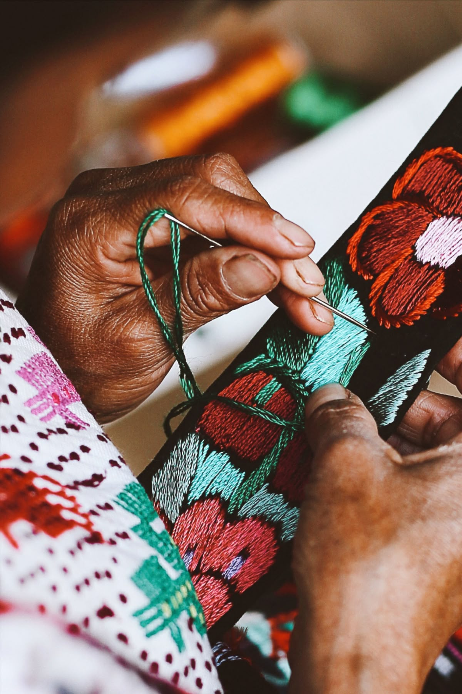
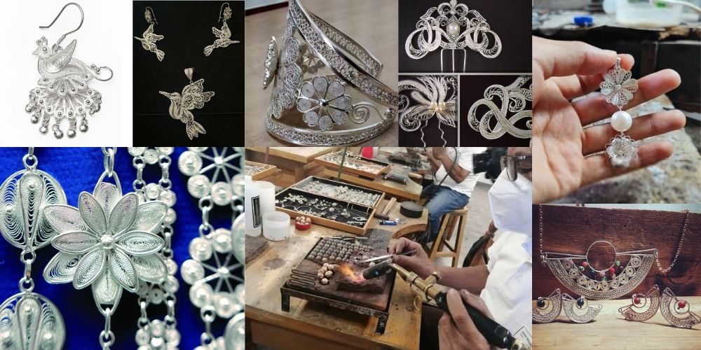

Magia en Madera: Alebrijes Oaxaqueños
Descubre criaturas fantásticas talladas a mano y pintadas con la historia de nuestras raíces.

Hilos que Cuentan Historias
Textiles tradicionales tejidos en telar de cintura con técnicas ancestrales de comunidades indígenas.

Brillo Eterno de Taxco
Platería tradicional de Taxco, hecha con técnicas artesanales que han perdurado por generaciones.